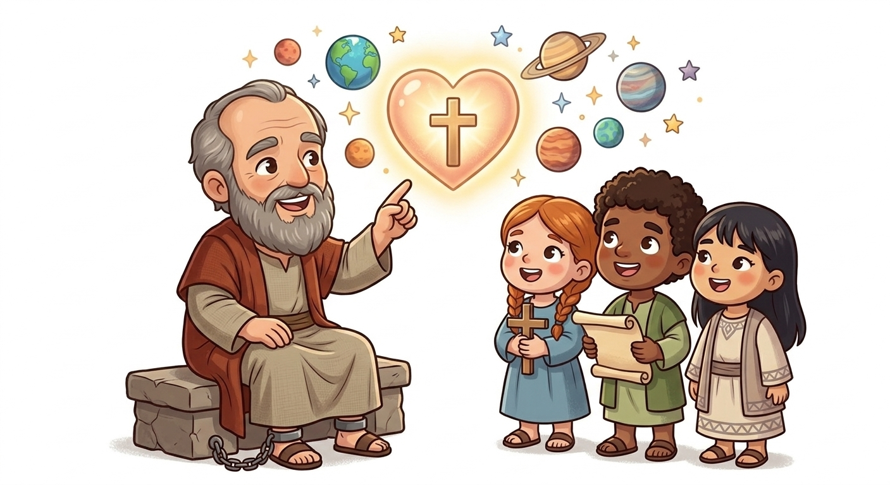
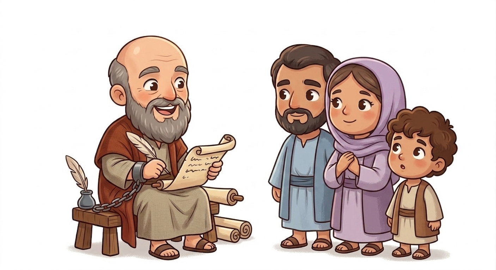
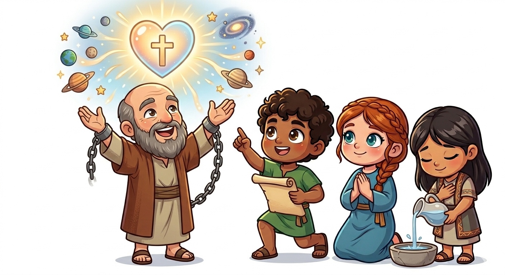
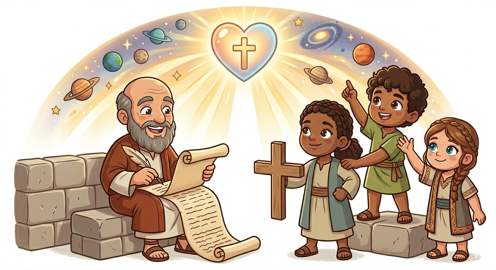
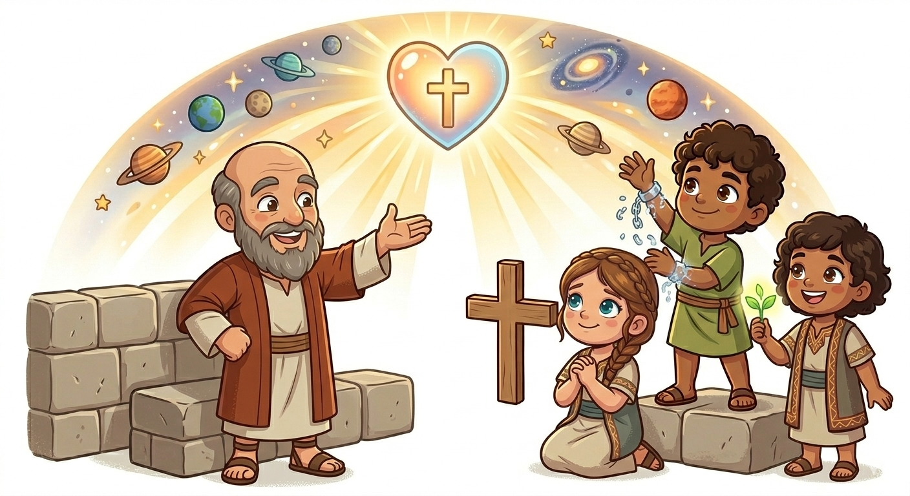
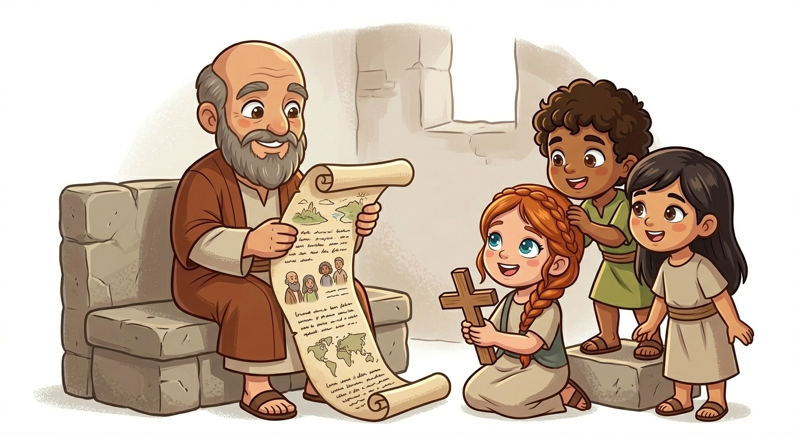

Jesus é Suficiente — Um Resumo Visual para Crianças
Jesus não é só mais um,
Ele é o primeiro, a luz que reluz!
Tudo foi feito por Ele e para Ele,
Nada existe sem que Ele revele!
📖 Colossenses 1:16-17
Não precisa de mais nada,
Jesus é a resposta sagrada!
Nenhuma regra ou tradição,
Substitui Sua salvação!
📖 Colossenses 2:9-10
Suas roupas sejam de amor e perdão,
Compaixão, bondade e gratidão!
Viva cada dia focado no céu,
Pois sua vida está com Deus, não no véu!
📖 Colossenses 3:12-14
Paulo escreveu esta carta da prisão! Mesmo preso, ele queria ensinar sobre Jesus. Ele nunca visitou Colossos pessoalmente, mas amava aquela igreja e queria que eles conhecessem a verdade sobre Cristo.
Uma comunidade de cristãos que estava sendo enganada por falsas doutrinas. Paulo escreveu para lembrá-los de que Jesus é tudo o que eles precisam — nada mais, nada menos!


Paulo ensina que Jesus é o centro de tudo! Ele criou o universo, Ele sustenta todas as coisas, e Ele é a cabeça da igreja.
Algumas pessoas estavam dizendo que os cristãos precisavam seguir regras extras ou adorar anjos. Mas Paulo disse: "Não! Jesus é tudo que vocês precisam!"
Quando você tem Jesus, você tem vida completa. Não precisa de mais nada para ser salvo ou amado por Deus!
Este livro nos ensina a não acreditar em mentiras! Muitas pessoas tentam dizer que precisamos de algo além de Jesus — mas isso não é verdade.
Jesus não é apenas poderoso — Ele também nos ama profundamente! Nada pode substituir o amor e o poder que Ele tem.
Quando sabemos que Jesus é suficiente, podemos viver com paz e confiança. Não precisamos ter medo ou dúvida!


O propósito de Colossenses é lembrar aos cristãos que devem viver com o foco em Jesus. Não em regras, não em tradições, mas em Cristo!
Paulo queria que eles entendessem: "Vocês morreram para o mundo e agora vivem escondidos em Cristo. Então vivam como pessoas novas!"
Isso significa viver com amor, perdão, bondade e gratidão — porque é assim que Jesus viveu! Quando Ele é o nosso foco, nossa vida fica cheia de alegria e propósito.
Paulo nunca visitou Colossos pessoalmente — ele escreveu a carta de longe, provavelmente de Roma, enquanto estava preso!
Mesmo sem conhecer a igreja pessoalmente, Paulo se importava tanto com eles que escreveu uma das cartas mais bonitas do Novo Testamento!
Curiosidade: A cidade de Colossos foi destruída por um terremoto pouco tempo depois, mas a mensagem de Paulo permanece viva até hoje!
Isso nos ensina que a Palavra de Deus é eterna — ela atravessa o tempo e o espaço para chegar até nós!

© 2025 - Trilho Kids
Desenvolvido com ❤️ para crianças